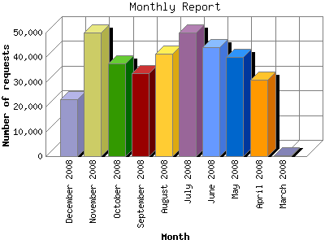

Analog 5.1
Analog 5.1 Report Magic 2.21
Report Magic 2.21The Monthly Report identifies activity for each month in the report
time frame. Remember that each page hit can result in several server requests
as the images for each page are loaded.
Note: Depending on the
report time frame, the first and last months may not represent a complete
month's worth of data, resulting in lower hits.

| Month | Number of requests | Number of page requests | |
|---|---|---|---|
| 1. | March 2008 | 279 | 62 |
| 2. | April 2008 | 30,895 | 5,794 |
| 3. | May 2008 | 40,095 | 7,391 |
| 4. | June 2008 | 44,162 | 7,706 |
| 5. | July 2008 | 49,888 | 8,440 |
| 6. | August 2008 | 41,596 | 7,178 |
| 7. | September 2008 | 33,676 | 5,578 |
| 8. | October 2008 | 37,655 | 6,314 |
| 9. | November 2008 | 49,888 | 6,889 |
| 10. | December 2008 | 23,020 | 3,400 |
Most active month July 2008 : 8,440 pages sent. 49,888 requests handled.
Monthly average: 5,875 pages sent. 35,115 requests handled.
This report was generated on December 17, 2008 15:14.
Report time frame March 31, 2008 17:55 to December 16, 2008 23:51.
| Web statistics report produced by: | |
| Analog 5.1 | Report Magic 2.21 |